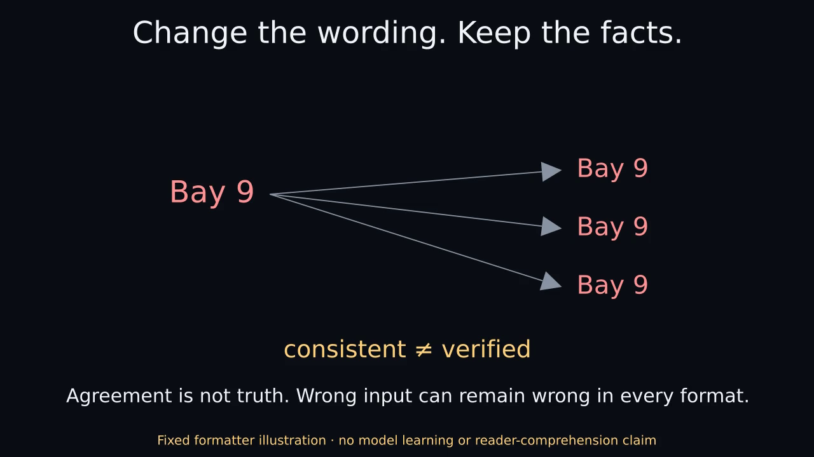

Change the wording. Keep the facts.
Actual Manim Community 0.22.0. FIXED TEMPLATE ILLUSTRATION · NO MODEL OR READER EXPERIMENT.
Nothing plays automatically. The static poster and complete transcript are the reduced-motion path.

MP4 · Optional GIF · Static PNG · Text transcript · Captions
Complete transcript
00–08 seconds
Requested presentation changes wording, not supplied facts.
The example ledger has place Bay 3, time 18:45 and requirement printed ID. Register means an explicitly requested presentation format, not an inference about a reader's ability or background. Introductory: Go to Bay 3 at 18:45. Bring printed ID. Working: Check-in: Bay 3, 18:45. Required: printed ID. Technical: Location=Bay 3; time=18:45; requirement=printed ID. These are chosen templates with no learning or language model.
08–16 seconds
A shorter instruction can lose exact facts needed to act.
Check in this evening. Bring your ID. This drops the exact place, time and printed-copy requirement. An exact-literal check catches those omissions here; it is not a semantic entailment test and can fail on paraphrases or negation.
16–24 seconds
Agreement is not truth. Wrong input can remain wrong in every format.
If the ledger incorrectly says Bay 9, all three templates repeat Bay 9. Agreement does not verify the original fact. This illustration establishes neither improved comprehension nor an auxiliary-head training benefit.